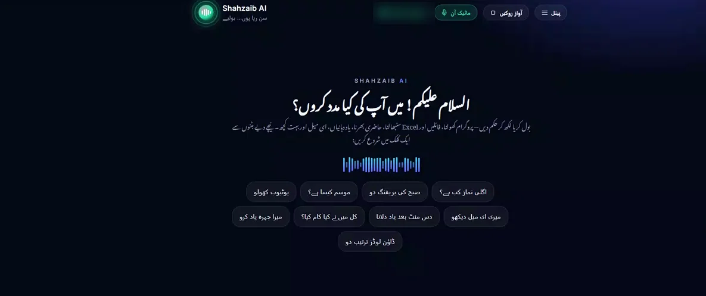

Shahzaib AI for PC — Urdu Voice Assistant for Windows (Complete Guide)شہزیب AI اب PC پر بھی — Windows کے لیے مکمل گائیڈ
Shahzaib AI started as an Urdu voice assistant for Android phones. From today it also runs on your computer: Shahzaib AI for PC is a free voice assistant for Windows that listens in Urdu, talks back in Urdu, and does real work on your PC. This guide covers everything from A to Z — what it does, how to download and install it, how to get a free Gemini key, and how to fix the small problems that can appear on the way.شہزیب AI کی شروعات Android فون کے اردو اسسٹنٹ کے طور پر ہوئی تھی۔ آج سے یہ آپ کے کمپیوٹر پر بھی چلتا ہے: Shahzaib AI for PC Windows کے لیے مفت آواز والا اسسٹنٹ ہے جو اردو سنتا ہے، اردو میں جواب دیتا ہے اور آپ کے PC پر اصل کام کرتا ہے۔ اس گائیڈ میں A سے Z سب کچھ ہے — یہ کیا کرتا ہے، ڈاؤن لوڈ اور انسٹال کیسے کریں، مفت Gemini key کیسے بنائیں، اور راستے میں آنے والے چھوٹے مسئلے کیسے حل کریں۔
The PC assistant listening in Urdu — press play and turn the sound on.PC اسسٹنٹ اردو میں سنتا ہوا — Play دبائیں اور آواز آن کریں۔
What it can doیہ کیا کیا کر سکتا ہے
- Control your PC by voice: open Chrome, YouTube, apps and files, play or pause media, type what you dictate — in Urdu.آواز سے PC چلائیں: Chrome، YouTube، apps اور فائلیں کھولیں، میڈیا چلائیں یا روکیں، بول کر لکھیں — سب اردو میں۔
- AI chat with Gemini: ask questions, get explanations, drafts and translations, in Urdu or English.Gemini سے بات چیت: سوال پوچھیں، وضاحت، مسودے اور ترجمے حاصل کریں — اردو یا English میں۔
- Files, Excel and PDF work: organise files, read PDFs, and work with Excel sheets by voice.فائلیں، Excel اور PDF کا کام: فائلیں ترتیب دیں، PDF پڑھیں اور Excel شیٹس پر بول کر کام کریں۔
- Attendance filling: give it an Odoo Attendance Report (PDF/Excel) or connect it to Odoo, and it fills the attendance sheet for you — names are matched even when the spelling differs a little.حاضری بھرنا: Odoo کی Attendance Report (PDF/Excel) دیں یا Odoo سے جوڑیں — یہ حاضری شیٹ بھر دیتا ہے، اور نام معمولی spelling فرق کے باوجود ملا لیتا ہے۔
- Memory, diary and reminders: it remembers what you tell it, keeps a diary, reminds you, and gives a morning briefing.یادداشت، ڈائری اور یاددہانی: جو بتائیں یاد رکھتا ہے، ڈائری لکھتا ہے، یاد دلاتا ہے اور صبح کی briefing دیتا ہے۔
- Face and voice recognition: it can learn to recognise its owner.چہرے اور آواز کی پہچان: یہ اپنے مالک کو پہچاننا سیکھ سکتا ہے۔
What you needآپ کو کیا چاہیے
- A PC or laptop with Windows 10 or 11Windows 10 یا 11 والا PC یا laptop
- Internet (for the AI answers)انٹرنیٹ (AI جوابات کے لیے)
- A microphone — a laptop's built-in mic is fineایک مائیک — laptop کا اپنا مائیک کافی ہے
- Your own free Gemini API key (Step 2 below — it takes two minutes)آپ کی اپنی مفت Gemini API key (نیچے قدم 2 — صرف دو منٹ لگتے ہیں)
Step 1 — Download and installقدم 1 — ڈاؤن لوڈ اور انسٹال
- Download the Setup file (69 MB): ShahzaibAI-PC-Setup.exe — or use the "Shahzaib AI for PC" section on the homepage.Setup فائل (69 MB) ڈاؤن لوڈ کریں: ShahzaibAI-PC-Setup.exe — یا homepage کے "Shahzaib AI for PC" حصے سے۔
- Double-click the downloaded file to start the install, and follow the simple steps. No Python, no technical setup — it installs like any normal program and puts a shortcut on your desktop.ڈاؤن لوڈ شدہ فائل پر double-click کر کے انسٹال شروع کریں اور آسان قدم پورے کریں۔ نہ Python، نہ کوئی تکنیکی جھنجھٹ — یہ عام پروگرام کی طرح انسٹال ہوتا ہے اور desktop پر shortcut بنا دیتا ہے۔
- SmartScreen note: because the app is new, Windows may show a blue "Windows protected your PC" box. This is normal for new apps. Click "More info", then "Run anyway".SmartScreen کی تنبیہ: app نئی ہونے کی وجہ سے Windows نیلا "Windows protected your PC" والا پیغام دکھا سکتا ہے۔ نئی apps کے ساتھ یہ معمول ہے۔ "More info" پر کلک کریں، پھر "Run anyway"۔
- Open Shahzaib AI — PC Assistant from the desktop shortcut. It will open empty and ask for a Gemini key — that is Step 2.Desktop shortcut سے Shahzaib AI — PC Assistant کھولیں۔ یہ خالی کھلے گا اور Gemini key مانگے گا — یہی قدم 2 ہے۔

The main screen — the wave shows the assistant is listening.مرکزی اسکرین — لہر بتاتی ہے کہ اسسٹنٹ سن رہا ہے۔
Step 2 — Get your free Gemini keyقدم 2 — اپنی مفت Gemini key بنائیں
Like the Android app, the PC assistant works with your own free key from Google. The key is what connects it to the Gemini AI. It is free, it stays yours, and nobody else can see it.Android ایپ کی طرح PC اسسٹنٹ بھی آپ کی اپنی مفت key سے چلتا ہے جو Google دیتا ہے۔ یہی key اسے Gemini AI سے جوڑتی ہے۔ یہ مفت ہے، آپ کی اپنی رہتی ہے، اور کوئی اور اسے نہیں دیکھ سکتا۔
- Open aistudio.google.com in your browser and sign in with your Google (Gmail) account.Browser میں aistudio.google.com کھولیں اور اپنے Google (Gmail) اکاؤنٹ سے sign in کریں۔
- Click "Get API key", then "Create API key"."Get API key" پر کلک کریں، پھر "Create API key"۔
- Google will show a long key (it starts with "AIza"). Copy it and keep it safe, like a password.Google ایک لمبی key دکھائے گا (یہ "AIza" سے شروع ہوتی ہے)۔ اسے copy کر کے پاس ورڈ کی طرح محفوظ رکھیں۔
More detail with pictures: How to Get a Free Gemini API Key (Step by Step).تصویروں کے ساتھ مزید تفصیل: مفت Gemini API key کیسے بنائیں (قدم بہ قدم)۔
Step 3 — Add the key in the assistantقدم 3 — اسسٹنٹ میں key لگائیں
- In the assistant window, open Settings (ترتیبات) from the panel.اسسٹنٹ کی window میں پینل سے Settings (ترتیبات) کھولیں۔
- Paste your key in the API key field and press the add button (جوڑیں).API key والے خانے میں اپنی key paste کریں اور جوڑنے والا بٹن (جوڑیں) دبائیں۔
- Done — ask it anything, by voice or by typing: "السلام علیکم، آپ کیا کر سکتے ہیں؟"بس ہو گیا — اب آواز سے یا لکھ کر کچھ بھی پوچھیں: "السلام علیکم، آپ کیا کر سکتے ہیں؟"
First things to tryسب سے پہلے یہ آزمائیں
- "YouTube kholo" — open YouTube"یوٹیوب کھولو"
- "Jo main bol raha hoon wo likho" — dictation: speak, it types"جو میں بول رہا ہوں وہ لکھو" — بولیں، یہ لکھے گا
- "Kal subah 9 baje yaad dilana" — set a reminder"کل صبح 9 بجے یاد دلانا"
- Give it a PDF or an Excel file and ask what is insideکوئی PDF یا Excel فائل دے کر پوچھیں اس میں کیا ہے
Your key, your dataآپ کی key، آپ کا ڈیٹا
The assistant stores its memory, diary and settings on your own PC (in its own app folder) — nothing is sent to us. Your Gemini key also stays on your PC. If you install it on a different computer, it starts completely empty and asks for a key again: that is by design.اسسٹنٹ اپنی یادداشت، ڈائری اور settings آپ کے اپنے PC پر رکھتا ہے (اس کے اپنے app folder میں) — ہمیں کچھ نہیں بھیجا جاتا۔ آپ کی Gemini key بھی آپ کے PC پر ہی رہتی ہے۔ اگر آپ اسے کسی دوسرے کمپیوٹر پر لگائیں تو یہ بالکل خالی کھلے گا اور دوبارہ key مانگے گا — یہ اسی طرح بنایا گیا ہے۔
Problems? Quick fixesمسئلہ ہو تو؟ فوری حل
- "Gemini key abhi lagi hui nahi hai" — the assistant is running fine; it just needs your key. Do Step 2 and Step 3."Gemini key ابھی لگی ہوئی نہیں ہے" — اسسٹنٹ ٹھیک چل رہا ہے؛ اسے بس آپ کی key چاہیے۔ قدم 2 اور قدم 3 کریں۔
- Windows blocks the Setup — that is the SmartScreen note in Step 1: "More info" → "Run anyway".Windows Setup روکے — یہ قدم 1 والی SmartScreen تنبیہ ہے: "More info" ← "Run anyway"۔
- It does not hear you — check the microphone is plugged in and allowed: Windows Settings → Privacy → Microphone → allow apps.آواز نہ سنے — دیکھیں مائیک لگا ہے اور اجازت ملی ہے: Windows Settings ← Privacy ← Microphone ← apps کو اجازت دیں۔
- The answer says the free limit is over — the free key has a daily limit; wait, or add another free key in Settings.جواب میں "مفت حد ختم" آئے — مفت key کی روزانہ حد ہوتی ہے؛ انتظار کریں، یا Settings میں ایک اور مفت key جوڑ دیں۔
Ready? Download Shahzaib AI for PC and give your computer an Urdu voice. Using Android instead? The Android app is here. Updates and new features are announced first on the WhatsApp channel.تیار ہیں؟ Shahzaib AI for PC ڈاؤن لوڈ کریں اور اپنے کمپیوٹر کو اردو آواز دیں۔ Android استعمال کرتے ہیں؟ Android ایپ یہاں ہے۔ اپ ڈیٹس اور نئے فیچر سب سے پہلے WhatsApp چینل پر بتائے جاتے ہیں۔
Read nextمزید پڑھیں